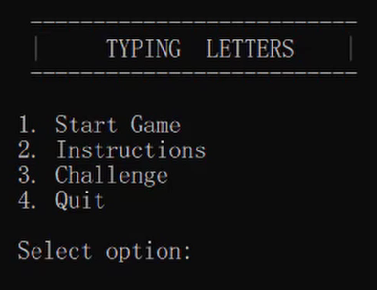
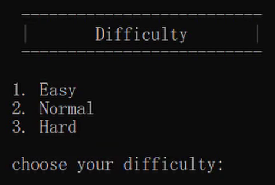
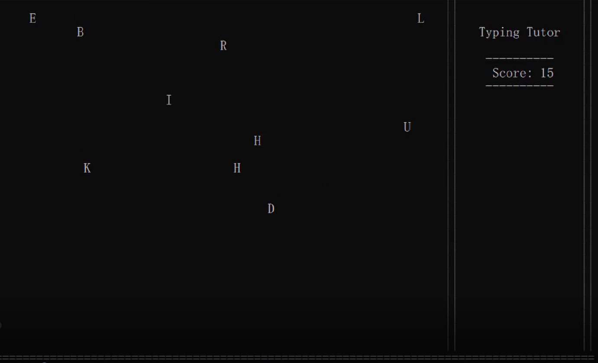
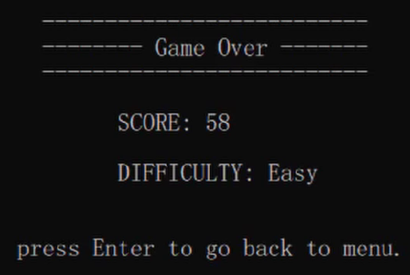

Intruction
สำหรับตัวเกม typing letters ของเรา มีวิธีการเล่น คือ จะมีตัวอักษรที่ร่วงลงมาจากทางด้านบน ซึ่งจะตกลงมาเรื่อยๆ ให้ผู้เล่นพิมพ์ตัวอักษรที่ตกลงมาเพื่อเพิ่มคะแนน โดยที่ไม่ให้ตัวอักษรร่วงหล่นจนถึงเส้นขอบด้านล่าง โดยจะแสดงเป็นตัวอักษรภาษาอังกฤษตัวพิมพ์ใหญ่ และ ตัวแป้นพิมพ์จะรองรับเพียงแค่ภาษาอังกฤษเท่านั้น จึงจะนับคะแนน แต่จะเป็นตัวพิมพ์เล็กหรือใหญ่ก็ได้ สามารถพิมพ์ได้เหมือนกัน ซึ่งเกมจะมีวิธีการเล่นอยู่ 2 แบบ
1. แบบปกติ ซึ่งมีระดับความยากอยู่ 3 ระดับ easy normal hard ซึ่งแต่ละระดับก็จะเพิ่มตามระดับความยาก ซึ่งตัวอักษรจะตกลงมาเรื่อยๆ จนกว่าที่ผู้เล่นจะไม่สามารถพิมพ์ตัวอักษรที่ตกลงมาทัน และ ร่วงลงมาจนถึงเส้นขอบด้านล่าง แล้วจึงจะสรุปและแสดงผลของคะแนนทั้งหมดพร้อมกับระดับความยาก
2. แบบ Challenge จะเหมือนแบบที่ 1 แต่จะมีการจับเวลา โดยจะแสดงอยู่ทางด้านขวา โดยจะนับถอยหลังจาก 120 ไปจนถึง 0 ซึ่งเวลานี้ไม่ใช่ 120 วินาที แต่จะเพียงตัวที่จะจับเวลาเท่านั้น ซึ่งจะนับเร็วกว่าเวลาปกติ โดยถ้าเทียบเป็นวินาทีแล้วจะเท่ากับ 40 วินาที โดยประมาณ ให้ผู้เล่นทำการพิมพ์ให้ได้มากที่สุดจนกว่าเวลาจะหมด แต่ยังคงต้องระวังไม่ให้ตัวอักษรตกถึงเส้นขอบด้านล่างเช่นกัน ซึ่งคะแนนจะวัดเป็นเหรียญรางวัล พร้อมกับคะแนนที่ทำได้ในตอนจบ
โดยคะแนน 0 - 49 จะไม่ได้อะไร หรือ ตัวอักษรตกถึงเส้นขอบด้านล่างก่อนเวลาหมด จะปรากฎข้อความ"You got Nothing Try again"
คะแนน 50 - 79 จะได้รับ เหรียญ ทองแดง หรือ bronze
คะแนน 80 - 119 จะได้เหรียญเงิน หรือ sliver
คะแนนมากกว่า 120 จะได้เหรียญทอง หรือ gold
เกณฑ์คะแนนมีระบุไว้ทางด้านขวา
หน้าเมนูจะมีทั้ง 4 ตัวเลือก คือ
1. Start Game คือ รูปแบบการเล่นแบบปกติ โดยเมื่อเลือกตัวเลือกนี้ จะนำไปสู่หน้าเลือกระดับความยากซึ่งมีอยู่ด้วยกัน 3 ระดับ คือ easy normal hard โดยจะเพิ่มความเร็วตามระดับ
2.Intructionsบอกรูปแบบ คำแนะนำในการเล่นเกม
3.Challenge รูปแบบการเล่นเกมแบบ มีเวลาจำกัด
4.Quit ออกจากโปรแกรม
ซึ่งสามารถเลือกตัวเลือกโดยการพิมพ์ตัวเลขด้านหน้าตัวเลือก เพื่อให้ตัวเลือกนั้นๆทำงาน



Abstract
เกม 'Type That Letter' สำหรับเสริมทักษะในด้านสมาธิ ความเร็ว ความแม่นยำและความจำ ทั้งนี้เนื่องจากผู้คนโดยส่วนใหญ่มักจะเห็นว่าการฝึกพิมพ์ดีดบนคอมพิวเตอร์นั้นเป็นเรื่องที่น่าเบื่อ และไม่น่าสนใจนัก ดังนั้นการพัฒนาจากโปรแกรมพิมพ์ดีดมาเป็นเกมนั้นช่วยเพิ่มความน่าสนใจและความสนุกได้ด้วย ซึ่งเกม 'Type That Letter' พัฒนาขึ้นด้วยโปรแกรมภาษา C++ ซึ่งเป็นเกมสองมิติ ใช้กราฟิกแบบง่าย ไม่เน้นความสวยงามมากนัก จุดเด่นของเกมนั้นก็คือ ภายในตัวเกมนั้นจะมีให้เลือกโหมดความยาก-ความง่ายของเกม ซึ่งในแต่ละโหมดนั้นความเร็วในการปรากฏตัวของตัวอักษรนั้นจะเร็วขึ้นตามความยากเช่นกัน